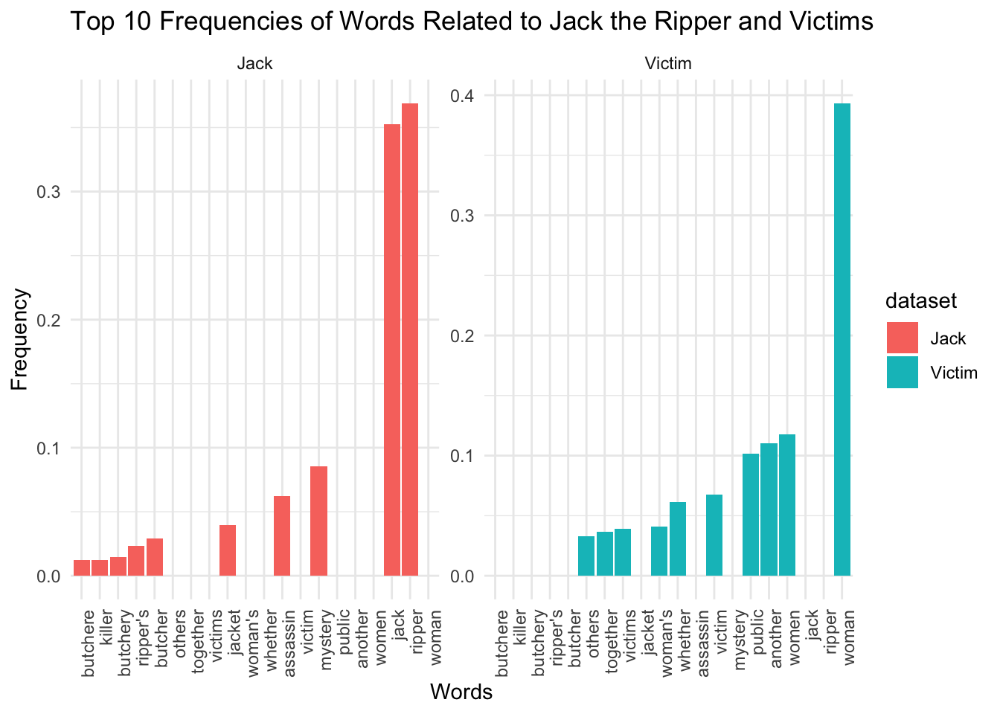
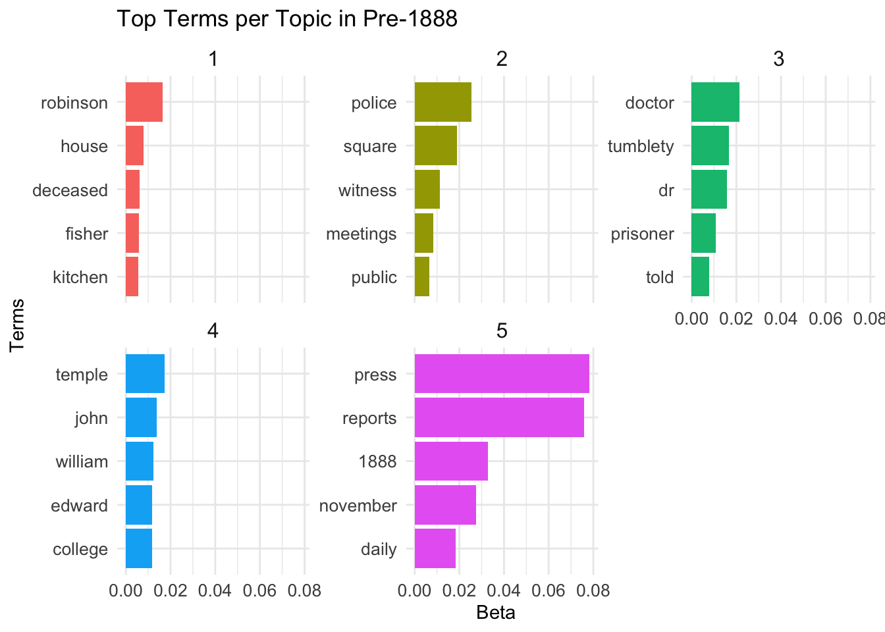
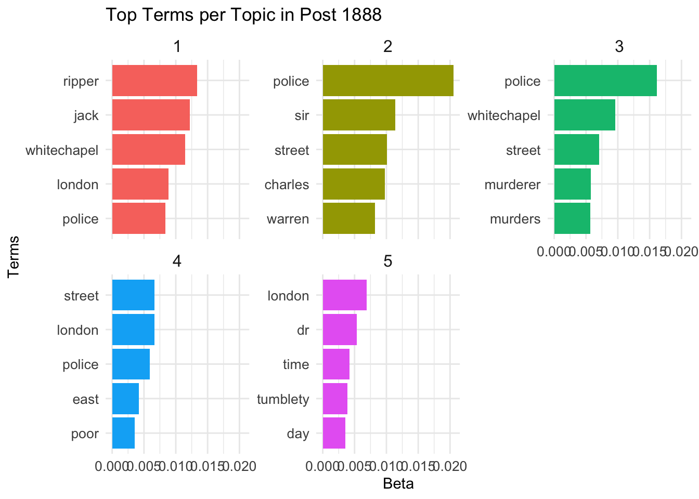

#For my Final project, I have applied codes to analyze a dataset of newspaper publications concerning Jack the Ripper and his notorious murders.
My research questions are as follows:
1. How does the frequency and context of terms associated with Jack the Ripper differ from those related to his victims in historical newspaper articles, and what does this tell us about societal attitudes towards crime and victimhood in late Victorian England?
2. How did the topics covered in newspaper reports change before and after 1888, the year of Jack the Ripper’s crimes? What can this reveal about the influence of these events on public discourse and media focus?
##Introduction
The infamous Jack the Ripper murders of 1888, targeting several sex workers in London’s Whitechapel district, became a stark illustration of the conversation between media sensationalism, public fear, and the stigmatization of sex workers. Jack the Ripper’s name continues to resonate throughout criminal history, not just for the horrific nature of the crimes but also for the media frenzy that erupted in late Victorian England.
This analysis aims to explore the differential portrayal of Jack the Ripper compared to his victims through the lens of historical newspaper articles. By analyzing the frequency and context of words used, we can gain insights into the narrative and societal perceptions constructed by the media of that era. The other half of the analysis looks at the pre and post year 1888 and how the narratives related to crimes have significantly changes with the sensationalism of ripper crimes.
##Historical Background
The analysis delves into the socio-political atmosphere of London in the late 19th century, emphasizing the role of media in shaping the narrative around the Ripper murders. Walkowitz points out that the press sensationalized the events, thereby embedding a fear of male violence deep within the public consciousness. This sensationalism contributed to a moral panic that framed the city as a perilous place for women. Walkowitz argues that over the past century, Jack the Ripper has been transformed into a mythical figure representing male violence against women. This transformation has permeated cultural narratives, impacting how society views and treats women, especially in urban settings.
── Conflicts ────────────────────────────────────────── tidyverse_conflicts() ──
✖ ggplot2::annotate() masks NLP::annotate()
✖ dplyr::filter() masks stats::filter()
✖ dplyr::lag() masks stats::lag()
ℹ Use the conflicted package (<http://conflicted.r-lib.org/>) to force all conflicts to become errors
#2 Reading datacasebook_final_2 <-read_csv("~/Downloads/casebook/casebook final 2.csv", show_col_types =FALSE)
#3 Defining stopwords that were coming often in my dataset and then combining them with custom stopwords.custom_stopwords <-c("aberdeen", "weekly", "times", "journal", "article", "said")all_stopwords <-c(stopwords, custom_stopwords)
#4 Now I am preprocessing the text and tokenizingtidy_casebook <- casebook_final_2 %>%unnest_tokens(word, News.Reports) %>%filter(!word %in% all_stopwords) %>%mutate(word =gsub("[\\d-]+", "", word)) %>%anti_join(data.frame(word = stopwords::stopwords(language ="en", source ="snowball")), by ="word")
#7 Word frequency analysis for each and combinedjack_word_freq <- jack_texts %>%count(word, sort =TRUE) %>%top_n(10, n) %>%mutate(frequency = n /sum(n))victim_word_freq <- victim_texts %>%count(word, sort =TRUE) %>%top_n(10, n) %>%mutate(frequency = n /sum(n))combined_top10_freq <-full_join(jack_word_freq, victim_word_freq, by ="word", suffix =c("_jack", "_victim"))jack_word_freq$dataset <-"Jack"victim_word_freq$dataset <-"Victim"
#8 Combining datasets and plottingcombined_top10_freq <-bind_rows(jack_word_freq, victim_word_freq)ggplot(combined_top10_freq, aes(x =reorder(word, frequency), y = frequency, fill = dataset)) +geom_col() +facet_wrap(~ dataset, scales ="free_y") +theme_minimal() +theme(axis.text.x =element_text(angle =90, hjust =1)) +labs(x ="Words", y ="Frequency", title ="Top 10 Frequencies of Words Related to Jack the Ripper and Victims")

##Findings
My analysis of the terms used to describe Jack the Ripper and his victims revealed a striking disparity, potentially highlighting an imbalance in media coverage. The data suggests a focus on the sensational aspects of the murderer’s identity (“ripper”, “butchere”, “assassin”, “mystery”) compared to the generic and impersonal terms used for the victims like “woman”, “another”, “public”. This context highlights a narrative that prioritizes the criminal’s story over humanizing the victims.
This aligns with Warkentin’s observation in ‘“Jack the Ripper” Strikes Again’ of the glorification of the Ripper and the trivialization of his female victims. Originally portrayed as a near-heroic figure, the Ripper contrasted sharply with the derogatory depictions of his victims, mostly sex workers. This narrative arguably served to enforce societal norms and control women’s behavior.
Further supporting this analysis, Wattis’ work ‘Analysing local newspaper coverage of murders involving street sex workers’ situates these local cases within a broader historical context. She identifies patterns established during the Whitechapel murders that persist: demonizing victims and glorifying perpetrators. Wattis references research demonstrating such media portrayals often reflect societal misogyny and perpetuate harmful stereotypes about sex workers.
##Topic Modelling
This brings us to the second part of our project where I will utilize topic modelling to see the change in narratives before and after 1888.
#2 Creating separate columns for Year, Month and Day and creating a new custom stopwords listcasebook.new <- casebook_final_2 %>%mutate(date =as.Date(Full.Date, format ="%Y-%m-%d"), Year =year(date),Month =month(date),Day =day(date))custom_stop_words <-c("aberdeen", "weekly", "times", "journal", "article", "said", "mr", "b", "q.c", "c", "b.a", "w", "a", "i", "u", "m", "s", "t")head(casebook.new)
#3 I plan to filter the news articles into two separate datasets: one for articles published before 1888 and another for those published after. I will then combine the stop word lists for both datasets and remove any duplicates.pre_1888 <- casebook.new %>%filter(Year <1888)post_1888 <- casebook.new %>%filter(Year >=1888)data(stop_words) custom_stop_words <-tibble(word = custom_stop_words, lexicon =rep("custom", length(custom_stop_words)))all_stop_words <-bind_rows(stop_words, custom_stop_words) %>%distinct()
#Now I will code clean up my pre and post 1888 news reports by extracting individual words, removing common stop words, and filtering out short words from the rows. This leaves a dataset of cleaned words ready for topic modeling.
#4 For pre-1888pre_1888_tidy <- pre_1888 %>%unnest_tokens(word, News.Reports) %>%anti_join(all_stop_words, by ="word") %>%filter(str_length(word) >1)
#5 For post-1888post_1888_tidy <- post_1888 %>%unnest_tokens(word, News.Reports) %>%anti_join(all_stop_words, by ="word") %>%filter(str_length(word) >1)
#Now I will use cast_dtm() to turn the words into a dtm for each datset.
#6 Creating the DTM for pre-1888dtm_pre_1888 <- pre_1888_tidy %>%count(file_name = File.Names, word) %>%cast_dtm(document = file_name, term = word, value = n)
# 7 Creating the DTM for post-1888dtm_post_1888 <- post_1888_tidy %>%count(file_name = File.Names, word) %>%cast_dtm(document = file_name, term = word, value = n)
#8 Applying LDA to the pre-1888 DTMlda_pre_1888 <-LDA(dtm_pre_1888, k =8, control =list(seed =1234))
#9 Applying LDA to the post-1888 DTMlda_post_1888 <-LDA(dtm_post_1888, k =8, control =list(seed =1234))
#10 Analyzing topics by extracting the terms for each topic and their probabilitieslibrary(broom)topics_pre_1888 <-tidy(lda_pre_1888, matrix ="beta")topics_post_1888 <-tidy(lda_post_1888, matrix ="beta")
#library(ggplot2)library(tidytext) ggplot(top_terms_pre_1888, aes(x = beta, y =reorder_within(term, beta, topic), fill =factor(topic))) +geom_col(show.legend =FALSE) +facet_wrap(~ topic, scales ="free_y") +scale_y_reordered() +theme_minimal() +theme(axis.text.x =element_text(size =10),axis.text.y =element_text(size =10),strip.text =element_text(size =12) ) +labs(x ="Beta", y ="Terms", title ="Top Terms per Topic in Pre-1888")

library(ggplot2)library(tidytext)ggplot(top_terms_post_1888, aes(x = beta, y =reorder_within(term, beta, topic), fill =factor(topic))) +geom_col(show.legend =FALSE) +facet_wrap(~ topic, scales ="free_y") +scale_y_reordered() +theme_minimal() +theme(axis.text.x =element_text(size =10),axis.text.y =element_text(size =10),strip.text =element_text(size =12) ) +labs(x ="Beta", y ="Terms", title ="Top Terms per Topic in Post 1888")

In her essay, “Murder for a Penny: Jack the Ripper and the Structural Impact of Sensational Reporting,” A. Luxx Mishou argues that the infamous Jack the Ripper murders weren’t just a media frenzy – they fundamentally reshaped Victorian-era penny newspapers. While public fascination with crime existed before (think Mary Ann Cotton or Dr. Thomas Neill Cream), the Ripper case became a turning point for penny press sensationalism.
Drew Gray in ‘London’s Shadows’ compare the Ripper coverage to other sensational crimes of the era, suggesting that the Ripper’s enduring fame owes much to the timing of his murders—coinciding with the rise of mass-market journalism—and the Victorian fascination with crime and morality tales. He underscores the dual role of the Victorian press during the Jack the Ripper murders. While capitalizing on the sensational nature of the murders to increase sales, the press also played a crucial role in highlighting and potentially influencing social reforms and public perceptions of law enforcement and government accountability. Gray portrays the press as a powerful entity that shaped public discourse and had a lasting impact on the structure of modern journalism.
This wasn’t just about selling papers. My topic modeling analysis reveals a stark difference in pre- and post-Ripper news reporting. Prior to 1888, the topics were diverse: legal proceedings, prominent figures, health news, and a variety of crimes. Public discourse seemed more balanced.
But post-1888, the focus shifted dramatically. Crime and public safety dominated, often referencing the Ripper murders directly or indirectly. The geographic concentration on Whitechapel and frequent use of “ripper” and “jack” expose a media fixated on these atrocities. Significantly, the word “woman” spiked in the context of “street” and “murder,” suggesting a heightened focus on female vulnerability due to the Ripper’s victims.
From a broad spectrum of topics to a Ripper-centric narrative, the data paints a clear picture. Penny press sensationalism narrowed public discourse, highlighting not just the murders, but also the underlying anxieties about crime, policing, and women’s safety in Victorian society. The press contributed to a lasting image of the Ripper as a shadowy, almost supernatural figure. This portrayal captivated the public’s imagination and solidified the murderer’s place as a figure of enduring mystery and horror in popular culture.
Conclusion -
This study has illuminated the profound influence that sensational journalism, exemplified by the coverage of Jack the Ripper in 1888, had on societal perceptions of crime and victimhood. Through a detailed textual analysis of historical newspaper articles, the research demonstrated a stark shift in the frequency and context of terms associated with Jack the Ripper compared to those referring to his victims. Notably, the language used not only prioritized the narrative of the criminal over the victims but also depicted the latter in terms that often reinforced societal stigmas against marginalized groups, particularly sex workers.
The analysis further revealed a significant transformation in the thematic focus of newspaper reporting before and after the Ripper’s crimes. The year 1888 marked a pivotal moment, as public discourse became dominated by themes of crime and safety, disproportionately magnifying fears and perpetuating a narrative that focused heavily on sensationalism and moral judgment. This shift underscores the role of the media in shaping not only public perceptions but also societal discourse at large.
These findings reflect a broader historical and cultural impact, suggesting that the media’s portrayal of such events can have lasting implications on societal views towards crime and those involved, whether as perpetrators or victims. By emphasizing the criminal’s mystique and reducing the victims to mere footnotes in their own tragedies, the newspapers of the time contributed to a culture that viewed sensational stories as a means of entertainment rather than opportunities for critical reflection or social change.
Bibliography-
“Casebook: Jack the Ripper - Main.” n.d. Www.casebook.org. https://www.casebook.org.
Gray, Drew B, and Bloomsbury Publishing. 2013. London’s Shadows : The Dark Side of the Victorian City. London: Bloomsbury.
Mishou , A. Luxx . n.d. “‘Murder for a Penny: Jack the Ripper and the Structural Impact of Sensational Reporting’ | Wilkie Collins Society.” https://wilkiecollinssociety.org/murder-for-a-penny-jack-the-ripper-and-the-structural-impact-of-sensational-reporting/.
Walkowitz, Judith R. “Jack the Ripper and the Myth of Male Violence.” Feminist Studies 8, no. 3 (1982): 543–74. https://doi.org/10.2307/3177712.
Warkentin, Elyssa. 2010. “‘Jack the Ripper’ Strikes Again.” Feminist Media Studies 10 (1): 35–49. https://doi.org/10.1080/14680770903457097.
Wattis, Louise. 2020. “Analysing Local Newspaper Coverage of Murders Involving Street Sex Workers.” Feminist Media Studies 22 (2): 1–16. https://doi.org/10.1080/14680777.2020.1804975.